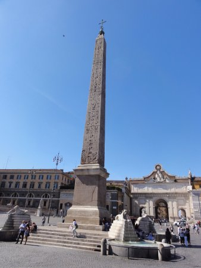
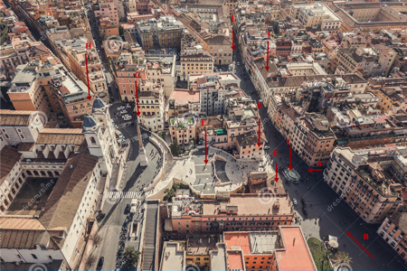

Foto 1: Porta Flaminia
Foto 1: Porta Flaminia
L'obiettivo di questa guida è permetterti di visitare il centro storico di Roma in 1 giorno riuscendo a vedere, con molta calma, il maggior numero di attrazioni possibili.
L'itinerario prevede la visita dei seguenti luoghi nel seguente ordine: Piazza del Popolo, via del Corso, via Condotti, Piazza di Spagna, Fontana di Trevi, Piazza Montecitorio, Pantheon, Piazza Navona, Campo dei Fiori. L'itinerario è lungo circa 4 Km è può essere percorso interamente a piedi.
La scelta del punto iniziale del nostro itinerario è fondamentale, sbagliare questa scelta potrebbe significare passare più volte dallo stesso punto e sprecare inutili energie. A mio avviso Piazza del Popolo è il punto ideale per iniziare quest'itinerario.
Foto 1: Porta Flaminia
L'ingresso a Piazza del Popolo è attraverso la Porta del Popolo detta anche Porta Flaminia (Foto 1). Questo sarà l'ingresso del vostro itinerario. Il suo aspetto attuale, ben diverso da quello originario, è frutto di una ricostruzione cinquecentesca. La facciata esterna fu commissionata da papa Pio IV a Michelangelo che, però, trasferì l’incarico a Nanni di Baccio Bigio, il quale realizzò l’opera tra il 1562 e il 1565 ispirandosi all’Arco di Tito. Le quattro colonne che decorano la facciata provengono dall’antica basilica di San Pietro. Nel 1638, in prossimità dell’apertura della porta, vennero inserite le due statue di San Pietro e San Paolo, realizzate da Francesco Mochi. La facciata interna fu invece realizzata da Gian Lorenzo Bernini per Papa Alessandro VII.
 Foto 2: Piazza del Popolo vista dall'alto
Foto 2: Piazza del Popolo vista dall'alto
La Foto 2 mostra la vista dall'alto di Piazza del Popolo con delle frecce che indicano i punti salienti che, a mio avviso, dovete conoscere.
Attraversando la Porta Flaminia (A) vi troverete in un breve ingresso alla cui sinistra c'è la Basilica di Santa Maria del Popolo (B). Percorrendo questo breve ingresso arriverete nella Piazza. Quest'ultima ha la forma di un elisse con l'Obelisco Flaminio (C) al centro.
Subito alla vostra sinistra c'è il Museo Leonardo da Vinci (L) in cui potrete ammirare la riproduzione delle splendide macchine di Leonardo da Vinci.
Vicino al Museo Leonardo da Vinci c'è una rampa di scale che porta alla Terrazza del Pincio (D). Sotto al Terrazzo c'è la Fontana della Dea Roma.
Dal lato opposto al terrazzo del Pincio c'è la Fontana del Nettuno (I).
Posizionandovi vicino all'obelisco con alle spalle la Porta Flaminia vedrete di fronte a voi le cosiddette chiese gemelle di Santa Maria in Montesano (detta anche Chiesa degli Artisti) e Santa Maria dei Miracoli (E) ai cui lati troviamo tre delle strade principali del centro storico: via del Babuino (G), via del Corso (F) e via di Ripetta (H).
Subito dopo l'ingresso alla Piazza attraverso la Porta Flaminia troverete a sinistra un vero gioiello artistico: la Basilica di Santa Maria del Popolo; una chiesa ricca di storia e di capolavori.
 Foto 3: Basilica di Santa Maria del Popolo
Foto 3: Basilica di Santa Maria del Popolo
La Basilica fu costruita su ordine di papa Pasquale II nel 1099 per celebrare la liberazione del Santo Sepolcro a opera dei crociati.
In essa è possibile ammirare la Cappela Cerasi situata sul lato sinistro del transetto. Nella cappella sono esposte ai lati la Crocifissione di S.Pietro e la Conversione di S.Paolo di Caravaggio, mentre al centro c'è la pala d'altare di Annibale Carraci, l'Assunzione della Vergine.
La Cappella Chigi, invece, è la seconda cappella sulla navata sinistra interamente disegnata da Raffaello su commissione di Agostino Chigi banchiere senese. Al centro della Cappella, sull'altare, troviamo la bellissima Nascita della Vergine di Sebastiano del Piombo e Salviati. Completano la pregevole decorazione la scultura di Giona che esce dalla balena (a sinistra) eseguita dal Lorenzetto su disegno del suo maestro Raffaello e la scultura Abacuc e l'Angelo del Bernini (a destra). Ci sono altre due sculture poste ai lati della cappella e non visibili frontalmente. Una è la scultura di Elia del Lorenzetto (a destra) e l'altra è Daniele e il Leone del Bernini (a sinistra). In alto la cappella è coperta da una cupola decorata a cassettoni dorati e mosaici con Dio Padre circondato dalle allegorie del Sole e gli altri pianeti realizzate su disegno di Raffaello. Gli affreschi tra le finestre con Storie della genesi e i pennacchi con le Stagioni di Salviati. Alle pareti si trovano le tombe di Agostino Chigi e del fratello Sigismondo Chigi, a forma piramidale, simbolo di eternità. Furono disegnate da Raffaello, ma modificate dal Bernini nei medaglioni marmorei. Nella prima cappella della navata di destra troviamo la Cappella del Presepio al cui interno c'è la Natività con san Girolamo dipinta dal Pinturicchio. Quest'ultimo ha anche dipinto la volta del Coro ristrutturato agli inizi del XVI secolo dal Bramante.
Foto 4: Museo Leonardo da Vinci
Ai lati della Basilica di Santa Maria del Popolo c'è l'ingresso al Museo Leonardo da Vinci i cui spazi espositivi sono collocati nei sotterranei della Basilica. In esso potrete ammirare la ricostruzione di molte macchine del maestro con cui è possibile anche interagire. L'ingresso è a pagamento tuttavia, se non volete spendere tempo e soldi in un museo vi consiglio comunque di avvicinarvi all'ingresso dove è possibile vedere, gratuitamente, una delle macchine a mio avviso più geniali di Leonardo: il Ponte Salvatico.
Ecco la sua descrizione dalle parole del suo autore: "Questo è un ponte salvatico, fatto per neciessità d’uno esercito, dalle propie piante che si trovano alle riviere de’ fiumi. E questa è l’armadura d’esso ponte, cioè l’ossa, che si copre poi di legniame più spesso e poi rami d’alberi e scope e piote di terra. E quanto più si carica più si serra e non ha neciessità di forte spalli come li altri".
Foto 5: Terrazzo del Pincio
Sempre spostandovi verso sinistra del Museo Leonardo da Vinci a pochi metri c'è una rampa di scale salendo le quali è possibile arrivare alla Terrazza del Pincio. Questa è una terrazza panoramica interna a Villa Borghese presente sulla sommità del colle Pincio adibita a belvedere e che si affaccia sulla sottostante Piazza del Popolo. Una volta arrivato a destinazione potrai godere di un panorama mozzafiato con vista di Roma dall’alto. Da essa è possibile ammirare la cupola di San Pietro e Castel Sant'Angelo. Ideale per trascorrere momenti romantici, scattare foto al tramonto e ammirare la Città eterna in ogni suo dettaglio anche di sera. La costruzione della terrazza ha inizio nel 1826 progettata da Giuseppe Valadier, che ideò anche la antistante Piazza del Popolo.
Foto 6: Fontana della Dea Roma
Sotto il Terrazzo del Pincio, nell'emiciclo orientale della piazza, è collocata la Fontana della Dea Roma. Fu progettata dall'architetto Giuseppe Valadier contestualmente al rifacimento della Piazza tra il 1814 e il 1823 e fu scolpita dallo scultore Giovanni Ceccarini in marmo e travertino. Essa prende il nome dal grande gruppo scultoreo posto al di sopra della vasca costituito da una enorme statua della dea Roma armata e fiancheggiata da due statue sedute rappresentanti i due fiumi di Roma, il Tevere e l’Aniene. Ai piedi della dea è collocata la lupa che allatta i gemelli, raffigurazione che celebra le leggendarie origini della città. Al di sotto di esso è collocata una grande vasca semicircolare di travertino sopra la quale una valva di conchiglia sempre in travertino raccoglie l’acqua riversata da un piccolo catino posto più in alto. Un importante restauro di tutto il complesso monumentale e artistico della piazza è stato realizzato nel 1997-1998.
Foto 7: Fontana del Nettuno
Sul lato opposto dove è collocata la Fontana della Dea Roma troviamo la Fontana del Nettuno. Anche questa fontana, come quella della Dea Roma, fu progettata dall'architetto Giuseppe Valadier contestualmente al rifacimento della Piazza tra il 1814 e il 1823 e fu scolpita dallo scultore Giovanni Ceccarini in marmo e travertino. La fontana si compone di un’ampia vasca di travertino di forma semicircolare sopra la quale una grande valva di conchiglia, anch’essa di travertino, raccoglie l’acqua riversata da una piccola tazza posta poco più in alto. La fontana è ornata da un imponente gruppo scultoreo nel quale l’elemento principale è rappresentato da una statua raffigurante Nettuno con il tridente nella mano destra, ai piedi della quale trovano posto due statue di tritoni appoggiati a delfini. Anche quest'opera fu restaurata insieme al complesso monumentale ed artistico della piazza 1997-1998.
 Foto 8: Obelisco Flaminio
Al centro della Piazza troviamo l'obelisco Flaminio chiamato così per la vicinanza della strada consolare Flaminia. Fu realizzato parzialmente nel 1300 a.C. all'epoca del faraone Sethi I e completato dal figlio Ramesse II nel per collocarlo nel tempio del Sole o Ra di Eliopoli in Egitto. E' uno dei 13 obelischi presenti a Roma e fu il primo obelisco portato a Roma dall'Egitto nel 10 a.C. Fu l'Impratore Ottaviano Augusto ad ordinarne il trasporto in ricordo della conquista dell'Egitto che divenne così una provincia romana. Abbattuto probabilmente durante le invasioni barbariche, fu ritrovato nel 1587 rotto in tre pezzi insieme all'obelisco Lateranense, ed eretto nuovamente, per ordine di papa Sisto V, in piazza del Popolo, ad opera di Domenico Fontana nel 1589. Nel 1823 Giuseppe Valadier lo ornò di una base con quattro vasche circolari e altrettanti leoni in pietra, di stile egizio, per ordine di papa Leone XII. L'obelisco è alto 25.90 m e con il basamento e la croce raggiunge i 36,50 m. E' il terzo obelisco più alto di Roma dopo quello del Vaticano e quello Lateranense.
Foto 9: Santa Maria di Montesanto
Posizionandoci accanto all'obelisco con la Porta Flaminia alle spalle di fronte a noi notiamo a sinistra la Chiesa degli Artisti che si colloca tra via del Babuino e via del Corso. E' considerata la Basilica gemella della vicina Basilica di Santa Maria dei Miracoli ma esistono sostanziali differenze. Innanzittutto, la Basilica è a pianta ellittica mentre la gemella è a pianta circolare. Al suo interno troviamo una singola navata a forma di ellisse con sei cappelle, tre a sinistra e tre a destra. Invece, la Basilica gemella ne ha soltanto quattro. La navata è coperta da una cupola la cui sezione è a forma di dodecagono inscritto in un'ellisse. La luce illumina la Basilica attraverso il lanternino centrale nella cupola e 7 finestre. Si accede al Presbiterio attraverso un arco trionfale sormontato da due angeli e al suo interno troviamo l'altare maggiore. Le celebrazione della Messa domenicale (Messa degli Artisti), che ha coinvolto numerosi e celebri rappresentanti del mondo dell’arte, ha nel tempo affidato alla basilica una seconda denominazione, Chiesa degli Artisti, che ricorda e perpetua la felice collaborazione dello storico dell’arte Giulio Carlo Argan, degli artisti della Scuola di piazza del Popolo, di musicisti del calibro di Goffredo Petrassi.
Foto 10: Santa Maria dei Miracoli
A fianco alla Chiesa degli Artisti, tra via del Corso e via di Ripetta troviamo la Basilica di Santa Maria dei Miracoli. A differenza della Basilica gemella ha una pianta a sezione circolare con due cappelle a sinistra e due a destra. Un profondo presbiterio ospita l'altare maggiore dove è conservata una copia della Madonna dei Miracoli. La leggenda narra di un miracolo che si verificò sulle sponde del fiume di Roma. Il 20 giugno del 1325, una mamma disperata invocò la Madonna, dipinta su un muro lungo le rive del fiume, affinché salvasse il suo piccolo caduto nelle acque del Tevere. Una volta che il bambino fu messo in salvo, in ricordo dell’evento prodigioso, si decise l’edificazione di una cappella dedicata alla Vergine Maria nella quale venne collocata l’immagine miracolosa che da allora è conosciuta come Madonna dei Miracoli. A causa dei continui straripamenti del fiume che mettevano in pericolo la cappella e la stessa immagine della Madonna, nel 1590 fu deciso di traslare il dipinto nella Chiesa di San Giacomo in Augusta, dove si può ammirare ancora oggi. Nella vecchia cappella, invece, ne venne sistemata una copia. Le continue inondazioni, tra cui quella devastante del 1530 che sommerse completamente la cappella, convinsero Papa Alessandro VII a costruire, nel 1661, una nuova chiesa in Piazza del Popolo ove custodire la copia dell'immagine della Madonna dei Miracoli.
Foto 11: Via del Corso
Dopo la visita a a Piazza del Popolo avviamoci verso via del Corso, una delle strade storiche di Roma che percorreremo fino a Via dei Condotti. Lungo il percorso si trovano un gran numero di palazzi gentilizi, chiese e negozi dei brand più famosi. Al Civico 18, sulla sinistra, c'è la Casa di Goethe filosofo tedesco. L'edificio oggi ospita un museo con una mostra permanente dedicata al filosofo e una temporanea. Di fronte, al civico 518, troviamo Palazzo Rondinini attuale sede del Circolo degli Schacchi.
Più avanti al civico 45 troviamo la Chiesa di Gesù e Maria e di fronte, al civico 499, c'è la Chiesa di San Giacomo in Augusta con l'annesso ospedale del XIV secolo, chiuso solo nel 2008. Più avanti, al civico 437, troviamo la Basilica dei Santi Ambrogio e Carlo al Corso.
Via del Corso oltre ad Arte e Cultura è anche una via dello shopping. Percorrendo la strada vi imbatterete in moltissimi negozi di cui alcuni dei brand più famosi come Footlocker, Disegual, Red, Nuvolari, Sisley, Alcott, Adidas, Intimissimi, Levi's e tanti altri.
Foto 12: Via dei Condotti
Dopo aver percorso Via del Corso per circa 1 Km alla nostra sinistra troveremo la traversa di Via dei Condotti (o Via Condotti) che ci condurrà a Piazza di Spagna dopo un breve tragitto di 300 m.
Via Condotti è una delle strade più note della Capitale ed è il principale distretto del lusso, dove sono presenti le boutique di Dior, Gucci, Bulgari, Armani, Prada, Salvatore Ferragamo, Dolce e Gabbana, Swarovski, Rolex, Tod's, Cartier, Tiffany & Co., Louis Vuitton e tanti altri.
Via dei Condotti non è solo alta moda, infatti, la strada ospita molti monumenti di interesse storico. Percorrendo la via da largo Goldoni (che si apre di fianco alla casa, proprio su Via Condotti, dove abitò il commediografo) a piazza di Spagna si incontrano i seguenti monumenti: Antico Caffè Greco (XVIII secolo), Palazzo Magistrale (o Palazzo di Malta), Palazzo degli Ansellini (XIX secolo), Palazzo Della Porta Negroni Caffarelli (XIX secolo), Palazzo Avogadri Neri (XVII secolo), Palazzo Megalotti (XVIII secolo) e Palazzo Maruscelli Lepri (XVII secolo).
 Foto 13: Piazza di Spagna vista dall'alto
Piazza di Spagna deve il suo nome al Palazzo di Spagna, sede dell’ambasciata iberica presso il Vaticano. La piazza venne creata proprio con l’idea di mettere in comunicazione l’ambasciata e la Chiesa di Trinità dei Monti. La Foto 13 mostra la Piazza vista dall'alto. Seguendo l'itinerario voi arriverete da Via Condotti (A) che in Piazza di Spagna si congiunge a Via del Babuino (B) che collega Piazza di Spagna con Piazza del Popolo. Appena arrivati vi troverete davanti la Fontana Barcaccia (C) anche se però lo sguardo verrà attratto inevitabilmente dalla celebre Scalinata (F) ai cui lati troviamo la Casa del poeta inglese John Keats (D) e la Sala da Tè Babington's (E). Appena salita la scalinata troviamo l'Obelisco Sallustiano (G) e subito dopo la Chiesa di Trinità dei Monti (H). Dalla Fontana Barcaccia andando a destra di Via Condotti troviamo il Palazzo di Spagna (I) e frontalmente ad esso la Colonna dell'Immacolata Concezione (L).
Foto 14: Fontana della Barcaccia
Al centro della piazza si trova la fontana detta la "Barcaccia” (1626-29) opera di Pietro Bernini, padre del più celebre Gian Lorenzo. La fontana ha la forma di un’imbarcazione con prua e poppa identiche ed è immersa in una piscina ovale. I bordi delle fiancate sono molto bassi, dando l’impressione che la barca stia per affondare. Sulla parte esterna della prua e della poppa sono presenti due grandi stemmi di Urbano VIII con tre api; ai lati degli stemmi l’acqua esce da finte bocche di cannoniere. Il termine "barcaccia" si riferisce alle imbarcazioni usate sul Tevere nel vicino porto di Ripetta. Altri motivi ispiratori per la fontana sono da ricercare, probabilmente, nella notizia secondo la quale esisteva nella zona una naumachia - edificio all’aperto dove si svolgevano giochi navali e battaglie con navi da guerra in miniatura - e nelle inondazioni del Tevere, che trascinavano le imbarcazioni fino ai piedi della Trinità de’ Monti.
Foto 15: Scalinata Piazza di Spagna
La monumentale scalinata di 135 gradini, commissionata dal cardinale Pierre Guérin de Tencin, fu inaugurata da papa Benedetto XIII in occasione del Giubileo del 1725. Venne progettata sia da Alessandro Specchi sia da Francesco De Sanctis dopo generazioni di lunghe e accese discussioni su come il ripido pendio sul lato del Pincio dovesse essere urbanizzato per collegarlo alla chiesa. La soluzione scelta fu quella di De Sanctis: una grande scalinata decorata da numerose terrazze-giardino, che in primavera ed estate viene addobbata splendidamente con molti fiori. All'angolo destro della scalinata vi era la casa del poeta inglese John Keats, che vi visse e morì nel 1821, oggi trasformata in un museo dedicato alla sua memoria e a quella dell'amico Percy Bysshe Shelley, piena di libri e memorabilia del Romanticismo inglese. All'angolo sinistro c'è, invece, la sala da tè Babington's aperta nel 1893.
Foto 16: Obelisco Sallustiano
L'obelisco è interamente realizzato in granito rosso, è posto su un basamento marmoreo ed è sormontato da un giglio e da una croce in bronzo. Il solo obelisco misura 13,91 metri di altezza e 30,45 considerando anche il basamento e la punta bronzea. Al contrario di ciò che si può pensare, quest'obelisco non ha origine egizie ma è di origine della Roma imperiale, probabilmente tra il II e il III secolo ad imitazione degli obelischi egizi. Come l'obelisco Agonale e quello del Pincio l'iscrizione dei geroglifici fu realizzata solo dopo il trasporto, con diversi errori di scrittura, ricopiando un'iscrizione dell'età faraonica. Originariamente doveva essere collocato negli horti Sallustiani per decorare la spina dell'ippodromo privato. Successivamente ebbe altre collocazioni e fu oggetto di diversi progetti finché Pio VI ne dispose la collocazione in cima alla scalinata che portava alla chiesa della Trinità dei Monti affidando il progetto all'architetto Giovanni Antinori. I lavori si conclusero nel 1787 nonostante i pareri negativi dei frati dell'Ordine dei Minimi.
Foto 17: Chiesa Trinita dei Monti
La chiesa di Trinità dei Monti, che sovrasta piazza di Spagna con i suoi due campanili – inusuali nel paesaggio romano – viene consacrata nel 1594. Come il convento annesso, deve la sua origine all’aiuto spirituale recato da san Francesco di Paola al re di Francia Luigi XI. Nel 1494 infatti il figlio Carlo VIII, grato per il sostegno ricevuto dal padre, inaugura sul Monte Pincio il cantiere di una costruzione destinata ad accogliere i religiosi francesi dell’Ordine dei Minimi, fondato da Francesco di Paola. I lavori di edificazione durano per tutto il XVI secolo e questo luogo sarà da allora in poi considerato come «la chiesa romana dei Re di Francia ». L’anno in cui Francesco di Paola é canonizzato (1519), i lavori di costruzione della chiesa e del convento sono in gran parte completati. La chiesa fu inizialmente costruita in stile gotico, con pietre della regione di Narbonne, e ha una sola navata delimitata su ogni lato da una successione di sei cappelle, alle quali si aggiungono le due cappelle del transetto. I presunti architetti di quell’opera sono Annibale Lippi e Gregorio Caronica. Intorno al 1774, su progetto di Giuseppe Pannini, l’antica volta principale della navata viene modificata: le strutture gotiche originali sono cancellate e varia l’armonia dei rapporti tra la crociera ogivale e le cappelle laterali. Un alto cancello in ferro battuto, posto inizialmente a livello della crociera ogivale, é destinato a preservare la vita monastica delle origini.
Foto 19: Palazzo di Spagna
Il Palazzo di Spagna, un piccolo edificio appartenente all'antica famiglia nobile dei Monaldeschi, fu affittato dagli ambasciatori spagnoli nel 1622. Pochi anni dopo, nel 1654, il palazzo fu acquistato dalla corona spagnola come residenza permanente dei suoi ambasciatori. L'architetto Borromini progettò lo sviluppo del palazzo con l'aggiunta della scala principale dell'ambasciata e della hall, continuati poi dall'architetto Antonio del Grande. Questi evve l'incarico di completare i lavori della costruzione che, con l'arricchimento di terrazze, rappresentava una delle opere architettoniche più splendide del tempo. Gli ambasciatori spagnoli nei secoli XVII e XVIII fecero del palazzo un ritrovo sfarzoso, un brillante luogo di eventi e festeggiamenti mondani che poi animavano la prospiciente Piazza di Spagna. Oggi l'ambasciata espone una rara collezione di arazzi in Gobelins del XVII secolo, mentre tre splendidi arazzi del XVIII secolo ornano le pareti della sala da pranzo. Due sculture "El alma beata" e "El alma condenada" di Gianlorenzo Bernini e quadri del Museo del Prado di celebri pittori spagnoli completano la ricchezza artistica del palazzo.
Foto 19: Colonna Immacolata Concezione
La Colonna dell'Immacolata Concezione è un monumento delXIX secolo eretto in Piazza Mignanelli di fronte al Palazzo di Spagna. È un'antica colonna Corinzia di marmo Cipollino scolpito nell'antica Roma e scoperta nel tardo Rinascimento presso il monastero di Santa Maria della Concezione. Abbandonata per quasi un secolo, papa Pio IX ebbe l'idea di dedicare un monumento all'Immacolata Concezione dando l'incarico a Luigi Poletti di progettare una base quadrata di marmo per sostenere la colonna. Lo scultore a sua volta commissionò quattro statue ad altri artisti per realizzare dei personaggi biblici. Così ai quattro angoli della base si trovanole statue in marmo di Mosè (Giacometti), David (Tadolini), Isaiah (Revelli), ed Ezechiele (Chelli). Sulla sommità della base lo scultore pose la colonna alta 11,81. In cima alla colonna fu collocata la statua in bronzo della Vergine Maria, opera di Giuseppe Obici, rappresentata nel calpestare il simbolo del peccato originale, un serpente. Il monumento è dedicato al dogma dell'Immacolata Concezione proclamato nella Cappella Sistina dal Papa Pio IX l'8 Dicembre 1854 con la bolla "Ineffabilis Deus" che promulagava l'immunità dal peccato originale della Vergine Maria fin dal momento del suo concepimento. L'8 Dicembre 1857, il Papa diede la benedizione alla città di Roma e al monumento in memoria di tale dogma. Da allora ogni anno nello stesso giorno il Papa ne ripete il rito.
Foto 20: Palazzo Propaganda Fide
Lasciamo Piazza Mignanelli e andiamo verso via di Propaganda Fide dove c'è l'omonimo palazzo da cui la strada prende il nome. Il Palazzo è un possedimento extraterritoriale della Santa Sede. L'edificio fu la prima sede del Pontificio Collegio Urbano per l'istruzione dei missionari cattolici e sin dall'inizio servì anche come sede della Sacra Congregazione per la Propagazione della Fede (Propaganda Fide), fondata nel 1622 con la Bolla Inscrutabili divinae di Papa Gregorio XV. L'immobile fu voluto da Gregorio XV Ludovisi, ma concretamente realizzato nei decenni tra il 1620 e 1640 dal suo successore Urbano VIII Barberini, che incaricò dei lavori Gianlorenzo Bernini. Questi fu sostituito nel 1644 da Francesco Borromini, preferito dal successore del Barberini, papa Innocenzo X Pamphilj. Il palazzo fu successivamente ampliato fino all'estensione definitiva attuale da Alessandro VII Chigi tra il 1655 e il 1667. Nel palazzo é presente un museo dove sono esposte opere per la maggior parte inedite, tra le quali uno straordinario Diluvio Universale di Salvator Rosa, un San Giorgio del Guercino e ritratti firmati e datati da Anton von Maron e Antonio Canova.
Foto 21: Basilica Sant'Andrea delle Fratte
Sant’Andrea delle Fratte è una basilica romana minore situata nel Rione Colonna. Fu elevata al rango di basilica ed è diventata un santuario dedicato a Maria dopo un evento che segnò la storia della chiesa, l’apparizione della Vergine Maria, il 20 gennaio 1842, all’ebreo Alfonso Ratisbona che “cadde in ginocchio da ebreo e si alzò da cristiano”. Verso la fine del XVI secolo la chiesa fu ricostruita per l’Ordine dei Minimi di San Francesco di Paola. Prese il nome di “Fratte” dalla vegetazione che la circondava. Dal 1653 al 1667, Francesco Borromini aggiunse una cupola e un sorprendente campanile, sormontato da una scultura del dio Giano. La facciata fu rifatta nel XIX secolo.
La facciata del XIX secolo costruita da Pasquale Belli si ispira ai modelli tradizionali delle chiese romane del XVI secolo, con due livelli, finemente eseguiti nelle sue cornici e dettagli, ma senza alcun elemento decorativo. Francesco Borromini costruì il campanile nel XVII secolo, con due piani e capitelli che curiosamente portano figure del dio Giano. Ha anche eretto la cupola che con i suoi contrafforti diagonali sembra una croce di Sant’Andrea. La lanterna rimase con il mattone nudo.
L’interno della chiesa, riccamente decorato con opere del XVII e XVIII secolo, ha la forma di una croce latina, con una navata fiancheggiata da tre cappelle per lato, un transetto e un’abside. Gli altari del transetto sono opere di Luigi Vanvitelli (quello a sinistra) e Filippo Barigioni (a destra). Conserva in particolare due angeli con simboli della Passione in marmo scolpiti da Bernini che furono chiesti da papa Clemente IX per adornare il ponte Sant’Angelo. Ma erano troppo raffinati per essere fuori, quindi furono lasciati all’artista, i cui eredi gli donarono alla chiesa. Sul ponte sono state installate copie. Una tela, tradizionalmente venerata, rappresenta la Vergine Maria che apparve a Ratisbona (seconda cappella a sinistra). Molte conversioni si sarebbero successi di fronte a essa. Quindi, Papa Benedetto XV designa il luogo come “la Lourdes romana”.
La chiesa ospita anche dipinti del martire di Sant’Andrea di Lazzaro Baldi (nel presbiterio) e opere di Francesco Cozza, Francesco Queirolo, Giovanni Battista Maini, Giuseppe Bottani, Paolo Posi e Pietro Bracci. Sotto l’altare maggiore si trova una cripta che conserva l’unico esempio di putridarium noto nella città di Roma. Il putridarium era un luogo in cui i corpi venivano temporaneamente installati durante la loro decomposizione.
La chiesa è fiancheggiata da un chiostro decorato con affreschi del XVII secolo che raccontano la vita di San Francesco di Paola. Qui sono sepolti il pittore russo Oreste Kiprensky (1782-1836) e la pittrice Angelica Kauffmann.
Foto 22: Fontana di Trevi
Proseguiamo il nostro percorso sulla via di Sant'Andrea delle Fratte e al Largo Nazareno proseguiamo verso via del Nazareno fino a via del Tritone. Da qui si prosegue per via della Stamperia che vi porterà a Fontana di Trevi, una delle mete più visitate a Roma. I turisti amano farsi fotografie e selfie davanti alla fontana e rinnovare il tradizionale rito del lancio della monetina. Il rito prevede il lancio di una monetina ad occhi chiusi con la mano sinistra mentre la destra poggia sulla spalla sinistra dando le spalle alla fontana. Grazie ad esso il vostro ritorno a Roma sarà garantito.
La storia della Fontana di Trevi è strettamente collegata con quella dell'Acquedotto Romano Vergine, voluto dal console Agrippa per alimentare le terme nelle vicinanze del Pantheon. Secondo una leggenda la sorgente delle acque venne indicata ad alcuni soldati da una giovane fanciulla, che in latino si dice virgo. Da qui il nome dell'acquedotto. Questo importante acquedotto è il più antico di tutta Roma e nonostante venne gravemente danneggiato in seguito all'attacco dei Goti nel 537a.C., rimase in funzione per tutto il medioevo fino ai giorni nostri. Il punto in cui terminava il condotto dell'acqua di virgo, si trovava sul lato orientale del Quirinale, nei pressi di un incrocio a tre vie, un trivio. Al centro di questo incrocio, intorno al 1400, era stata realizzata una fontana a tre bocche che riversava acqua in tre distinte vasche: da qui il nome di Fontana di Trevi.
Nel corso del tempo sia Papa Niccolò V sia Papa Urbano VIII si interessarono alla piazza con la fontana affidando i lavori di ristrutturazione rispettivamente a Gian Lorenzo Alberti e al Bernini, ma è solo grazie a Papa Clemente XII che possiamo ammirarla nel suo aspetto attuale. Il Pontefice, infatti, indette un bando pubblico nel 1732 al quale parteciparono tutti i grandi artisti dell'epoca tra cui Luigi Vanvitelli, Ferdinando Fuga, Pietro Bracci, Nicola Salvi e altri. Tutti i progetti furono giudicati troppo costosi tranne quello di Nicola Salvi che a settembre venne proclamato vincitore. I lavori iniziarono subito ma furono interrotti più volte e la fontana fu ultimata solo nel 1762, undici anni dopo la morte del Salvi, sotto la guida di Giuseppe Pannini. La spettacolare costruzione barocca, capolavoro d'architettura, scultura e ingegneria, si trova sul lato minore di Palazzo Poli e ne diventa così una integrazione naturale.
L'intera composizione è incentrata sulla tematica del mare. Al centro troneggia l'imponente figura di Oceano, trainato su un cocchio a forma di conchiglia da cavalli marini guidati da Tritoni. Ai piedi del gruppo centrale scogli e vegetazione pietrificata che poggiano sul basamento di Palazzo Poli mentre ai lati della nicchia centrale due coppie di colonne corinzie racchiudono le statue rappresentanti la Salubrità e la Prosperità. I due cavalli, invece rappresentano idealmente il mare burrascoso (quello di sinistra) e calmo (quello di destra) mentre i due pannelli in bassorilievo ai due lati dell'arco principale invece raffigurano Agrippa nell'atto di approvare la costruzione dell’acquedotto e la vergine che mostra ai soldati la sorgente dell'acqua. Infine le quattro grandi colonne corinzie sorreggono il prospetto superiore, sul quale si trovano, in corrispondenza di ogni colonna, quattro statue allegoriche più piccole: da sinistra a destra, l’Abbondanza della frutta, la Fertilità dei campi, la Ricchezza dell’Autunno e l’Amenità dei giardini. Nel mezzo, tra le due statue centrali, sormontata da un imponente stemma araldico di Papa Clemente XII è posta la grande iscrizione commemorativa.
Va detto che sebbene il progetto complessivo è opera di Nicola Salvi, l'intero complesso è frutto del lavoro di numerosi artisti che hanno contribuito ciascuno a realizzare una parte dell'opera. Così, il gruppo di Oceano che include le statue dei tritoni e dei cavalli, si deve a Giovan Battista Maini e Pietro Bracci, le statue della Salubrità e dell'Abbondanza a Filippo della Valle, i bassorilievi a Giovan Battista Grossi e Andrea Bergondi.
Foto 23: Mercatini di Via delle Muratte
Dando le spalle alla Fontana usciamo dalla Piazza avviandoci verso via delle Muratte, una stradina a destra della Piazza che porta di nuovo a Via del Corso più avanti rispetto a dove l'avevamo lasciata. È sempre piacevole percorrere questa stradina perché è sempre popolata da Mercatini dove potrete acquistare souvenir della città, qualche opera d'arte o qualche gioiellino di bigiotteria.
Passeggiare e lasciarsi distrarre dai prodotti delle bancarelle è il modo migliore per percorrere un po' di strada senza avvertire la fatica. Alla fine del percorso ci ritroveremo di nuovo a via del Corso, a pochi passi da Piazza Colonna dove poter ammirare altri interessanti monumenti il tutto senza esserci annoiati per un attimo.
Piazza Colonna a Roma deve il suo nome alla Colonna di Marco Aurelio che qui sorge sin dall'antichità, e che dà il nome anche all'omonimo Rione Colonna, di cui la piazza fa parte. La piazza, costruita verso la fine del Cinquecento da papa Sisto V, sorge sulla centralissima Via del Corso, vicino a Montecitorio e al Pantheon.
La pianta della piazza ha forma rettangolare, con al centro la colonna di Marco Aurelio, ed è circondata da alcuni dei più importanti palazzi storici di Roma. Qui, proprio davanti alla colonna, sul lato nord della piazza si trova l'entrata di palazzo Chigi alla cui famiglia appartenne dal 1659 fino al 1916, quando fu acquistato dallo Stato italiano. Venne fatto costruire nel XVI secolo da Pietro Aldobrandini per la sua famiglia; già sede dell'ambasciata dell'impero austro-ungarico è oggi sede della Presidenza del Consiglio dei ministri. Alla sinistra di questo, sul lato ad ovest si trova palazzo Wedekind, storica sede del quotidiano Il Tempo, che presenta un porticato formato da antichissime colonne ioniche originarie della città etrusca di Veio (oggi compresa nel quartiere Olgiata).
Proseguendo sul lato sud, vicino alla chiesa dei Santi Bartolomeo e Alessandro dei Bergamaschi si trova Palazzo Ferrajoli, fatto erigere dalla famiglia romana Del Bufalo-Cancellieri, che dettero il nome alla piazza durante tutto il XV secolo, e appartenuto ai loro eredi marchesi Niccolini, oggi ospitante tra l'altro, le sedi di rappresentanza delle regioni Friuli-Venezia Giulia e Valle d'Aosta.
Piazza Colonna la fontana di Giacomo Della Porta e palazzo Chigi (foto del 1996) Infine, affacciato alla piazza ma anche su Via del Corso, sull'area dove sorgeva il palazzo detto Piombino perché proprietà dei Boncompagni-Ludovisi principi di Piombino demolito nel 1889, sorge ora il palazzo della galleria Colonna, ora denominata galleria Alberto Sordi, storico ritrovo delle classi agiate della Roma di un tempo.